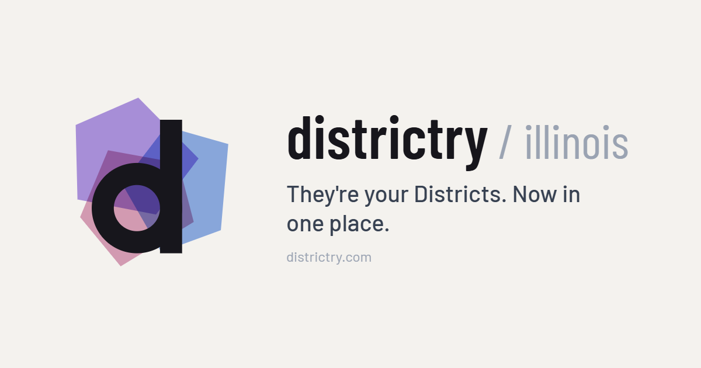

The canvases are interactive design documents — they load React from unpkg at view time, so a network-restricted browser shows a blank page. Stats in the mockups are hand-set snapshots; the coverage map itself is fetched live from the app's data.

| Stage | What | Status |
|---|---|---|
| A | This microsite — the rebrand package, reviewable in place | live |
| B | The real app, wearing the skin — Stage B is ADOPTED (R4.2): the working preview and its builder are retired, and this row now points at production. Dark mode shipped with it. | adopted |
| 3 | Production adoption across the fleet, step by step — roadmap in docs/DISTRICTRY_REBRAND.md (repo only, not served) | roadmap |